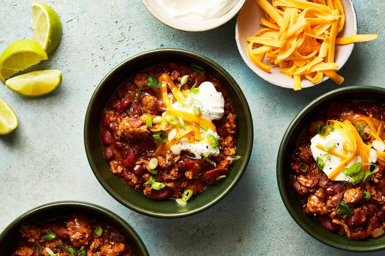

Turkey Chili with Beans

The best chili you'll ever have
You might think of chili as an easy weeknight dish, but this turkey
version from Pierre Franey will change your mind. It's fabulous, it's
healthy, and it can be cooked in about a half hour. A combination of dark
and white meat really adds depth and richness of flavor, so try to find a
mix, but all white meat (or a mixture of ground beef and turkey) will
yield a stellar batch too.
Ingredients
Yield: About 6 servings
- 1 tablespoon olive oil
- 2 pounds ground turkey, white and dark meat combined
- 2 cups coarsely chopped onions
- 2 tablespoons chopped garlic
- 1 large sweet red pepper, cored, deveined and coarsely chopped
- 1 cup chopped celery
- 1 jalapeno, cored, deveined and finely chopped
- 1 tablespoon fresh oregano, chopped, or 1 tablespoon dried
- 2 bay leaves
- 3 tablespoons chili powder
- 2 teaspoons ground cumin
- 3 cups canned diced tomatoes
- 2 cups chicken broth, fresh or canned
- Salt and black pepper
- 2 (15-ounce) cans red kidney beans, drained
- 2 cups shredded Cheddar
- 1 cup sour cream (optional)
- Sliced lime, for garnish (optional)
Preparation
-
Heat the oil over high in a large heavy pot and add the turkey meat.
Cook until lightly browned, about 5 minutes, chopping down and stirring
with the side of a heavy kitchen spoon to break up any lumps.
-
Add the onions, garlic, sweet pepper, celery, jalapeño, oregano, bay
leaves, chili powder and cumin. Stir to blend well. Cook for 5 minutes.
-
Add the tomatoes, chicken broth, salt and pepper to taste. Bring to a
boil, reduce heat and simmer, stirring occasionally, for 15 minutes.
-
Add the drained beans and cook, stirring occasionally, for 10 minutes
longer. Serve in bowls with Cheddar, and sour cream and lime wedges, if
desired.